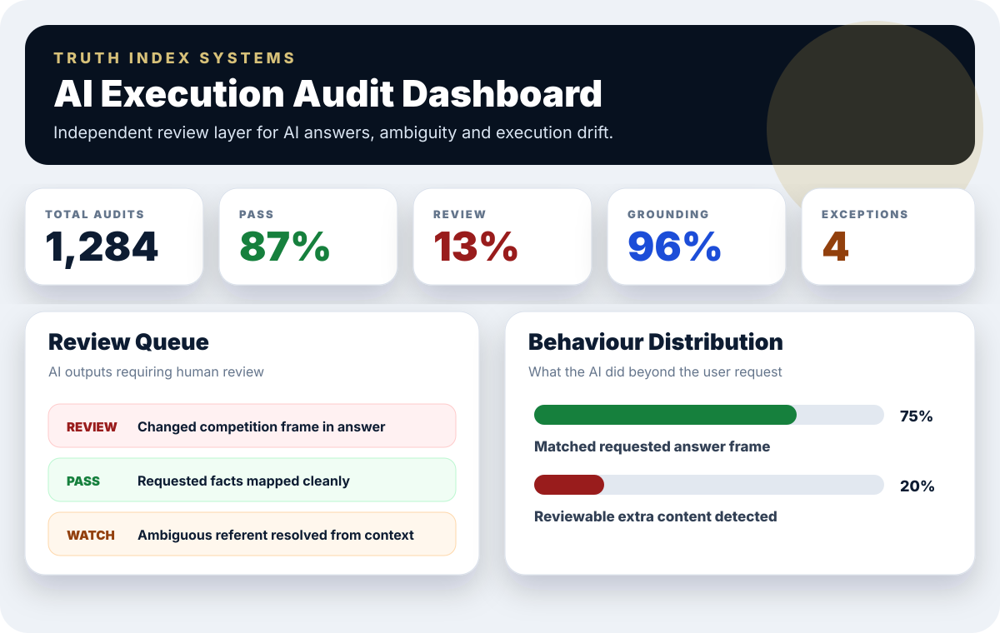
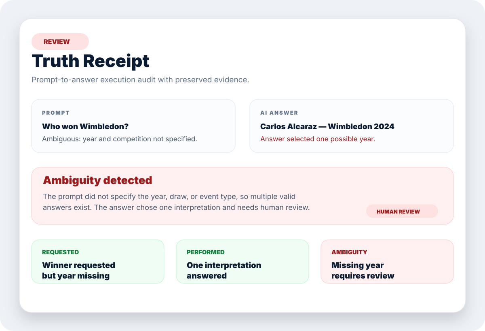

Interactions assessed
Matched requested frame
Human review advised
Evidence preserved
The problem
AI rarely fails loudly. It drifts quietly.
Enterprise AI answers can be fluent, confident and still not execute the original request cleanly. Truth Index focuses on the gap between what the user asked and what the AI actually performed.
Execution driftDetects answer frames that move beyond the user request.
AmbiguityFlags uncertain referents and context resolution issues.
Audit receiptsCreates a readable record for review, governance and QA.
Dashboard
Executive view for AI governance teams.
Monitor pass/review rates, review queues, behaviour patterns and exceptions across AI interactions.

Receipts
Every audit produces a clear evidence trail.
Truth receipts show the prompt, AI answer, requested contract, performed contract, review reason and additional content classification.

How it works
Built as an independent decision audit layer.
Capture
Record the user prompt and AI answer exactly as they occurred.
Extract
Create comparable requested and performed audit contracts.
Compare
Identify missing content, drift, ambiguity and reviewable additions.
Receipt
Produce a transparent audit record for governance teams.
Founder-led pilots now open
Interested in testing an independent audit layer for AI answers?
Truth Index is looking for early enterprise AI teams, governance leads and AI consultancies to test the product on real interaction logs.
Request pilot discussion